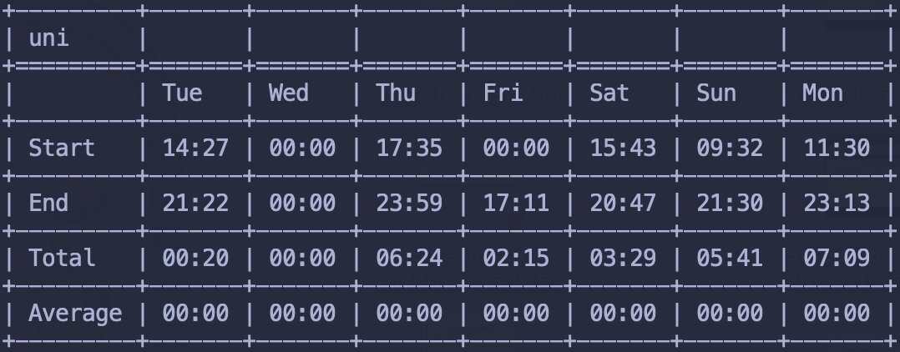

14/08
Riassumerei queste due giornate con: mi sto dando da fare :)
Il progetto di basi di dati è agli sgoccioli, ormai. Mi mancano le query e il
codice in cpp, ovvero la parte più divertente e meno tediosa. Oggi ho completato
la parte di progettazione che è piuttosto ridondante.
Per quanto riguarda il progetto di programmazione a oggetti, sto provando a
debuggarlo, con calma sto togliendo tutti i buggini del caso, il problema è che
non riesco a fare dei test su porzioni piccole di codice, quindi diventa
piuttosto pesante individuare gli errori. Forse dovrei pensare ad un modo per
fare degli unit test/integration test. Effettivamente mi semplificherrebbero
molto questa fase di debugging, orribile.
Domani probabilmente non studierò molto which is a good thing. This is how much
I’ve been studying the previous days:

Sto riprendendo il ritmo con calma, per questo motivo, credo che riposarmi domani mi faccia bene.